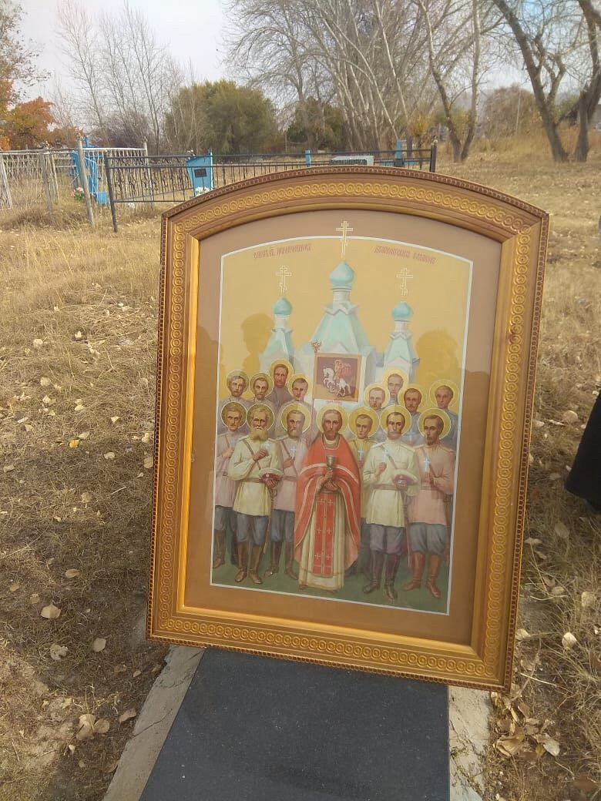

Zeitungsecke · 1918
Расстрел в станице Подгорненской
После октябрьского переворота власть большевиков дошла до Семиречья. В станицу Подгорненскую вошёл отряд красноармейцев, арестовал священника, церковного старосту и ещё тринадцать прихожан, вывел всех за село на кладбище и расстрелял. Хоронить не разрешили. Ночью казаки, среди которых были сыновья старосты, тайком выкопали общую могилу и похоронили пятнадцать человек. За могилой ухаживали более восьмидесяти лет.

У памятника на месте расстрела. Село Кыргызсай Уйгурского района Алматинской области, бывшая станица Подгорненская. Поздняя осень, год съёмки неизвестен. На подставке та же икона, что на снимке ниже.
Надпись на нижней плите памятника (видна на снимке выше):
«На сем месте в 19?? году были расстреляны священник церкви станицы Подгорновской Василий Калмыков, староста той же церкви Зосима Фунтиков и иже с ними пострадавшие православные христиане.»
Надпись на верхней плите, церковнославянским шрифтом:
«Блажени яже избралъ и приялъ еси Господи, память ихъ въ родъ и родъ.»
Год на камне на имеющемся снимке не читается. Церковный источник называет 1918-й, но по самому камню это ещё не подтверждено.

Икона собора новомучеников в киоте, поставленная на плиту памятника. В центре священник в красном мученическом облачении с потиром, вокруг около четырнадцати мирян в русских рубахах, у нескольких в руках кресты. Над храмом с бирюзовыми куполами помещена икона Георгия Победоносца. Надпись по верхнему полю иконы на этом снимке не читается, поэтому здесь не приводится.
Что известно о событии
Первым арестовали священника. Затем пришли к церковному старосте, провели обыск, изъяли церковное имущество и деньги, арестовали и его. Следом арестовали ещё тринадцать православных христиан. Перед расстрелом всех избивали, стреляли из пулемёта. Тела не отдавали: на горе напротив кладбища поставили пулемёт и не подпускали к ним, стреляя на звук. По церковному источнику погибших пятнадцать: священник, староста и тринадцать мирян.
Над могилой стояла часовня с неугасимой лампадой. Позже, когда село опустело, её разобрали на дрова.
Священник
Василий Дмитриевич Колмыков, родился в 1866 году, сын купца Дмитрия Колмыкова, на территории современного Азербайджана. Преподавал пение в Томском епархиальном училище, был псаломщиком в Ново-Николаевске, ныне Новосибирск. Женат, воспитывали приёмную дочь. С 1913 года в Омской епархии, в том же году рукоположен во диакона. Прославлен как священномученик Василий Жаркентский.
В списке, который ведут потомки станичников, он записан как Калмыков Василий Фёдорович. Церковные источники дают другое написание фамилии и другое отчество, прямо связывая его с отцом Дмитрием. При поиске в архивах имеет смысл проверять оба варианта.
Поимённые списки
Ниже два списка, которые ведут потомки станичников. Они приведены полностью и ровно с теми заголовками, что стоят в источнике. Списки не пересекаются по именам и отчествам, совпадают только фамилии. Числа в них не сходятся с числом погибших, которое называет церковный источник, и здесь эти списки намеренно ни с чем не сводятся: читатель видит их такими, какие они есть.
| Фамилия, имя, отчество | Примечание в источнике |
|---|---|
| Калмыков Василий Фёдорович | священнослужитель |
| Фунтиков Зосима Иванович | церковный староста |
| Васильев Алексей Михайлович | |
| Важнин Матвей | |
| Деев Василий Георгиевич | |
| Десятов Иван | |
| Изверов Василий | |
| Изверов Константин Дмитриевич | |
| Изверов Александр Дмитриевич | |
| Изверов Тихон Дмитриевич | |
| Изверов Павел | |
| Зорин Василий | |
| Карпов Роман | |
| Мальцев Егор | |
| Пятков Пётр (Павел) Терентьевич | в источнике два варианта имени |
| Плужников | имя и отчество неизвестны |
| Просвириков | имя и отчество неизвестны |
| Роденков Александр | |
| Семёнов Данила | |
| Семёнов Иван Данилович | |
| Семёнов Александр Данилович | |
| Смирнов Александр | |
| Смирнов Иван Александрович | |
| Фунтиков Иван Филиппович | |
| Фунтиков Александр Иванович | конец списка |
| Фамилия, имя, отчество | Год рождения |
|---|---|
| Важнин Евфграф Матвеевич | 1896 |
| Веригин Григорий Саватьевич | 1877 |
| Веригин Сергей Григорьевич | 1907 |
| Грибановский Георгий Петрович | 1900 |
| Евсеев Андрей Григорьевич | 1889 |
| Распутин Николай Изотович | 1887 |
| Роденков Егор Никитич | 1876 |
| Роденков Иван Иванович | 1894 |
| Русаков Степан Иванович | 1896 |
| Смирнов Гавриил Александрович | 1904 |
| Смирнов Пётр Александрович | 1896 |
| Казаков Павел | 1904 |
| Хурунжев Сергей Яковлевич | 1880 |
Как читать эти имена
Написания в списках сохранены как в источнике. Разночтения, которые видны сразу: «Зостм» вместо Зосима, «священлслужитель», «Дмитртевич» у одного из братьев Изверовых, «Филлипович» у Фунтикова, «Евфграф» вместо канонического Евграф. Здесь они выправлены, потому что это явные описки переписчика, а не варианты имени.
Фамилии, у которых на Fundus есть страница рода, сделаны ссылками. Не связаны намеренно: Веригин, в справочнике родов Голубевской есть род Верегин, но это другое написание и одно к другому без проверки сводить нельзя. Так же с Просвириковым: в справочнике есть Просвиряков. Фамилий Калмыков, Евсеев, Казаков и Хурунжев в справочнике Голубевской нет вовсе; последнюю стоит проверять и в формах Хорунжев, Хорунжий, в казачьем обиходе она может идти от чина хорунжего.
Событие, обстоятельства и биография священника: Православная Церковь Казахстана, страница духовно-культурного комплекса мемориального дома-музея святого Василия Жаркентского: публикация на pck.kz →. Оба поимённых списка и обе фотографии переданы потомками станичников в частной переписке, 2026 год. Место: бывшая станица Подгорненская, ныне село Кыргызсай Уйгурского района Алматинской области.